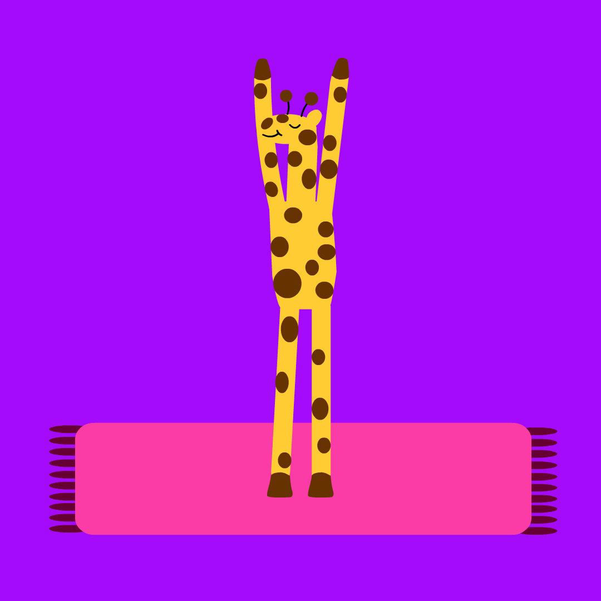
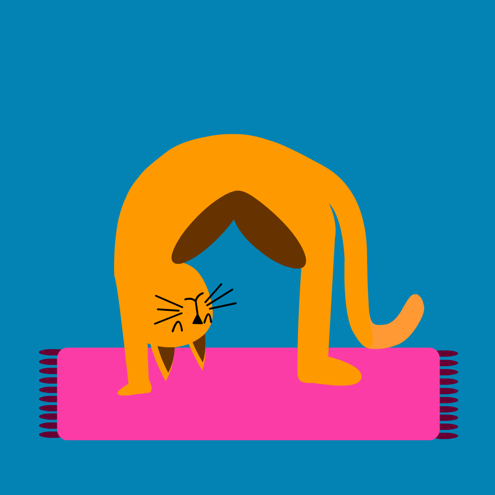
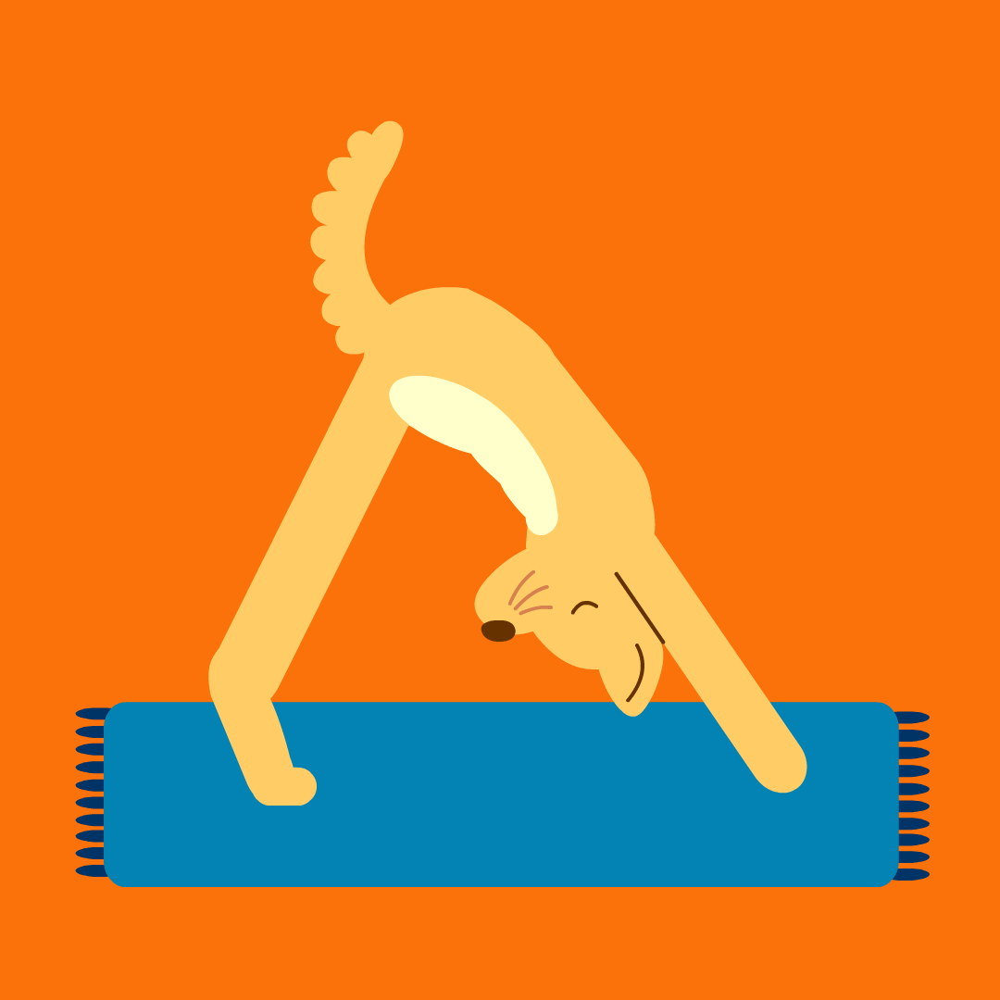
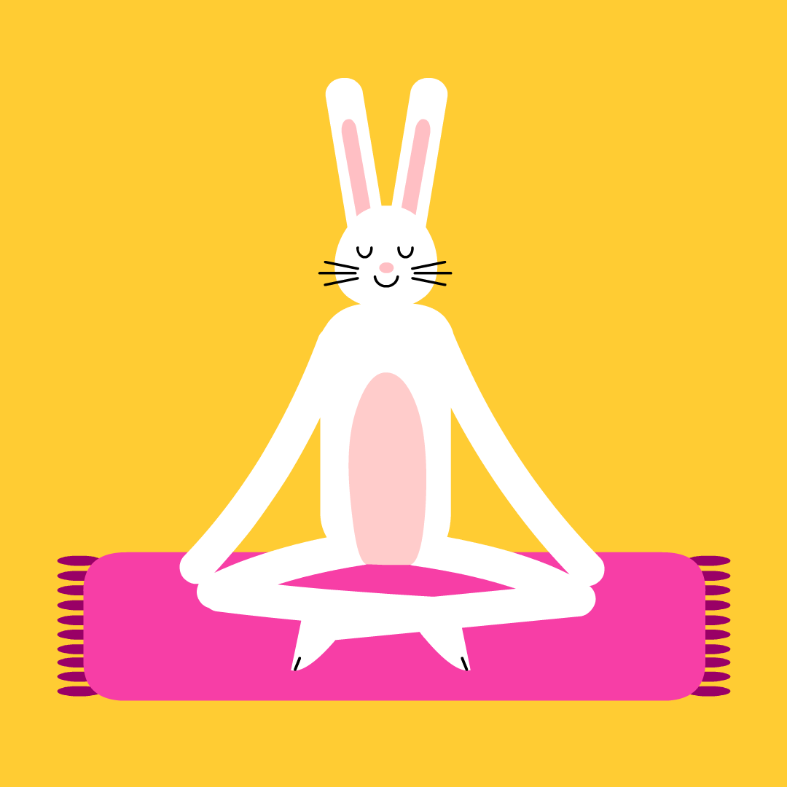
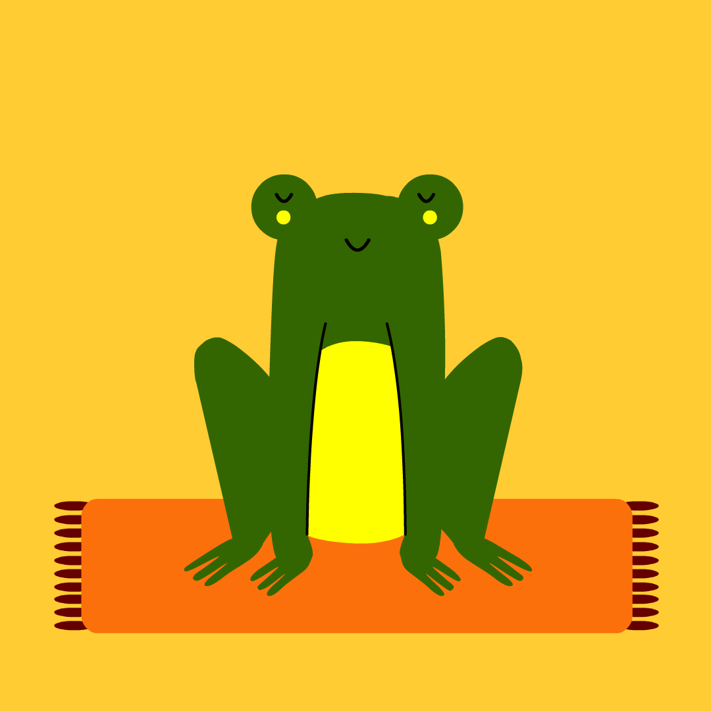
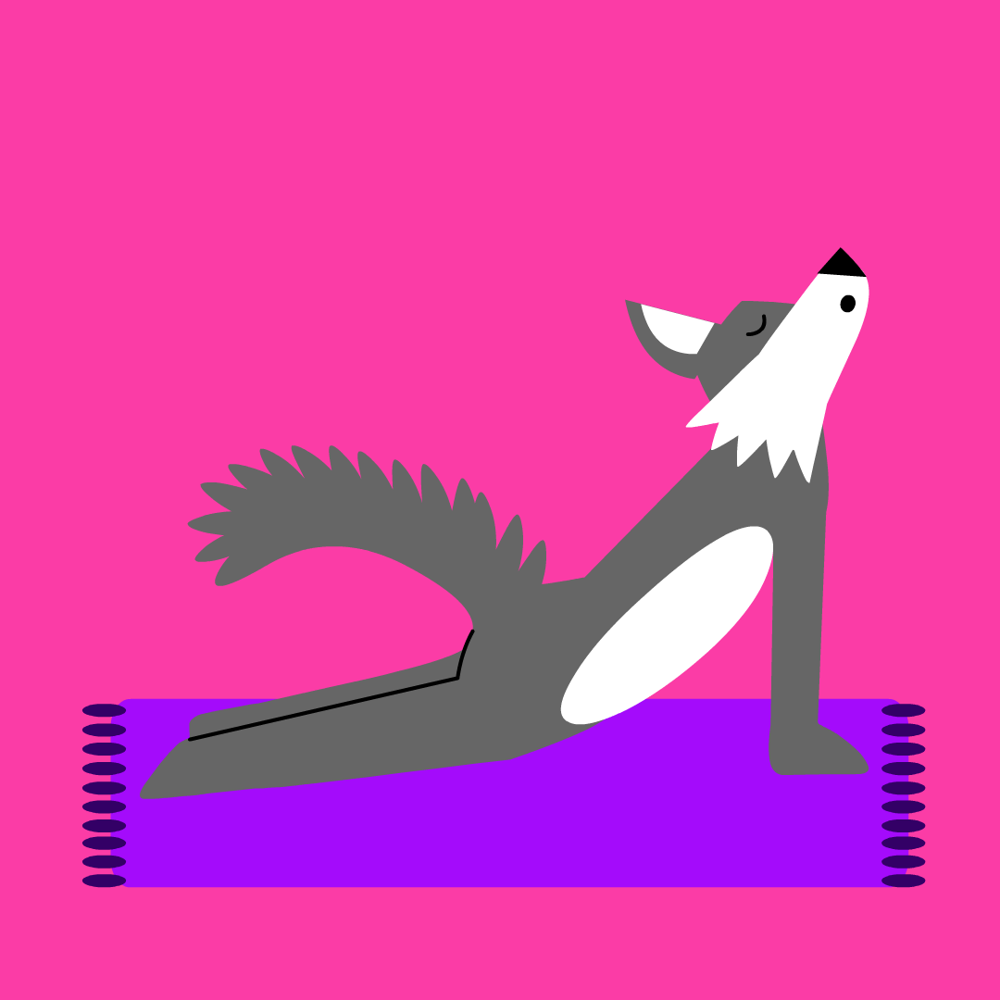
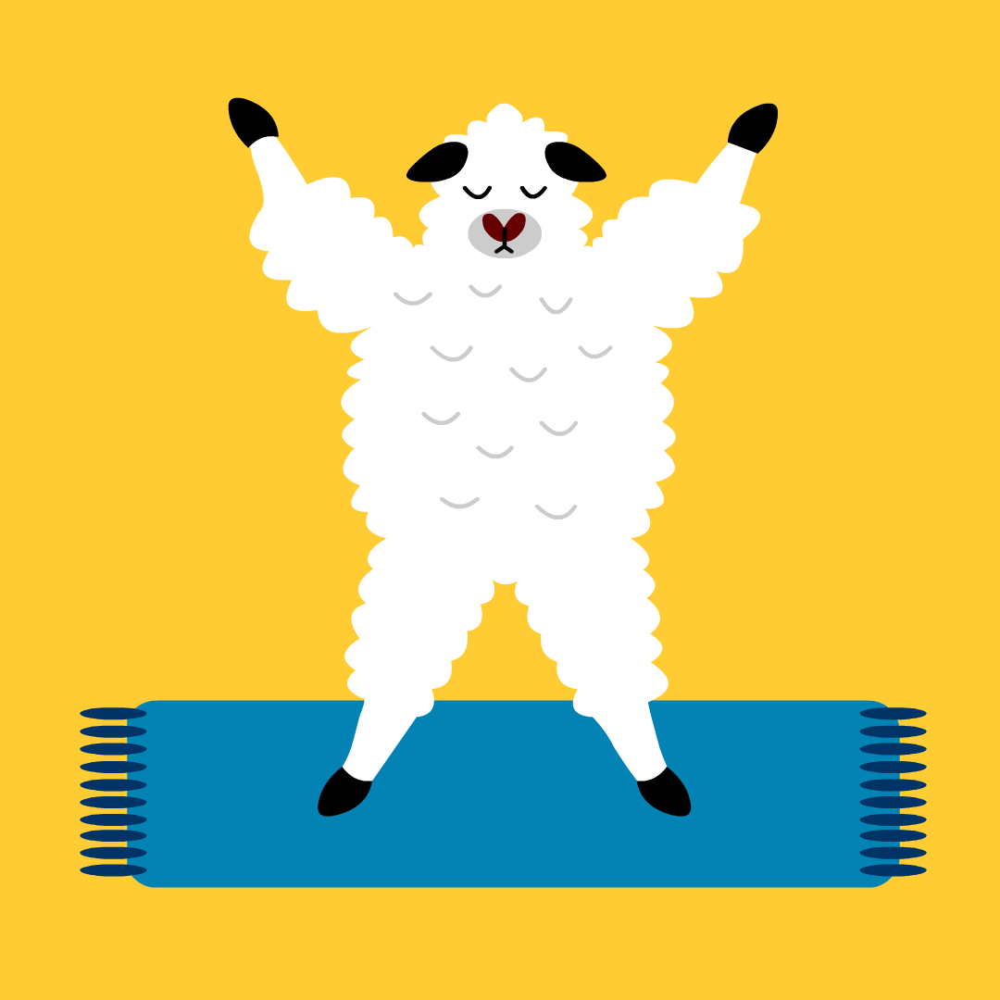
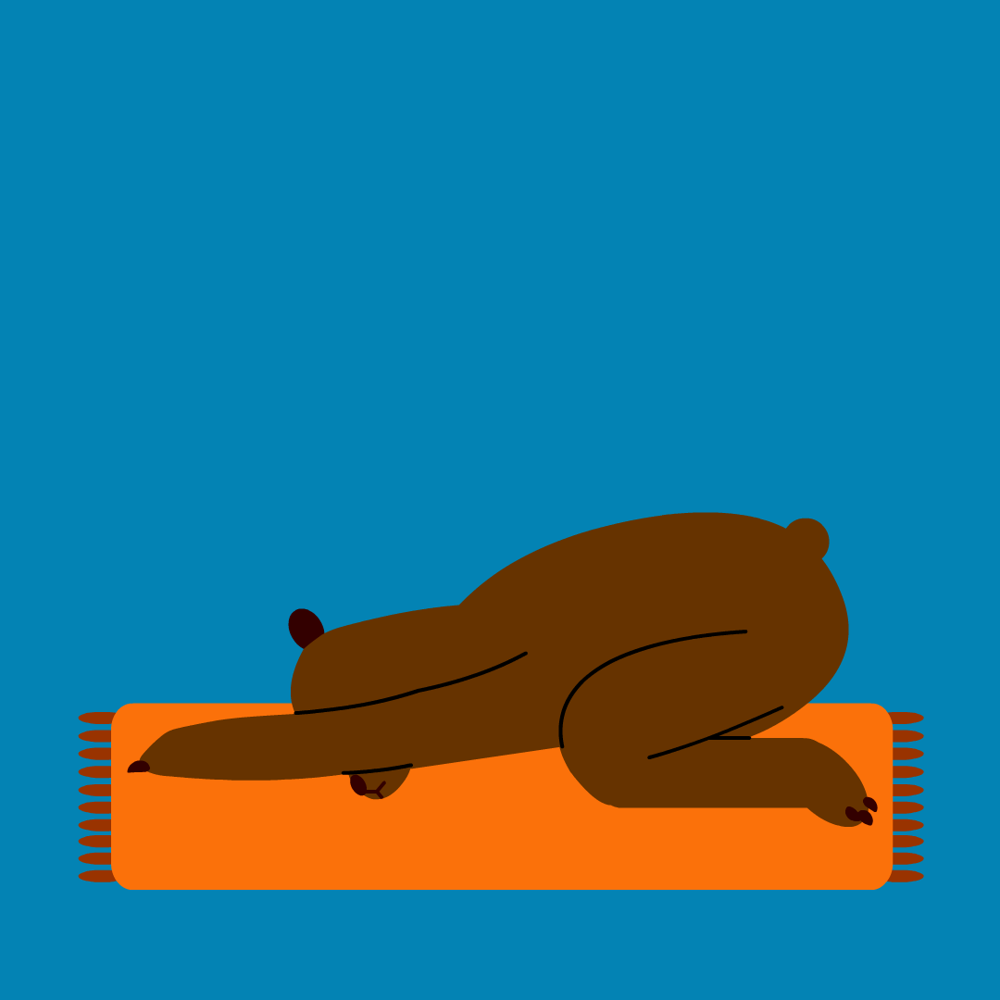
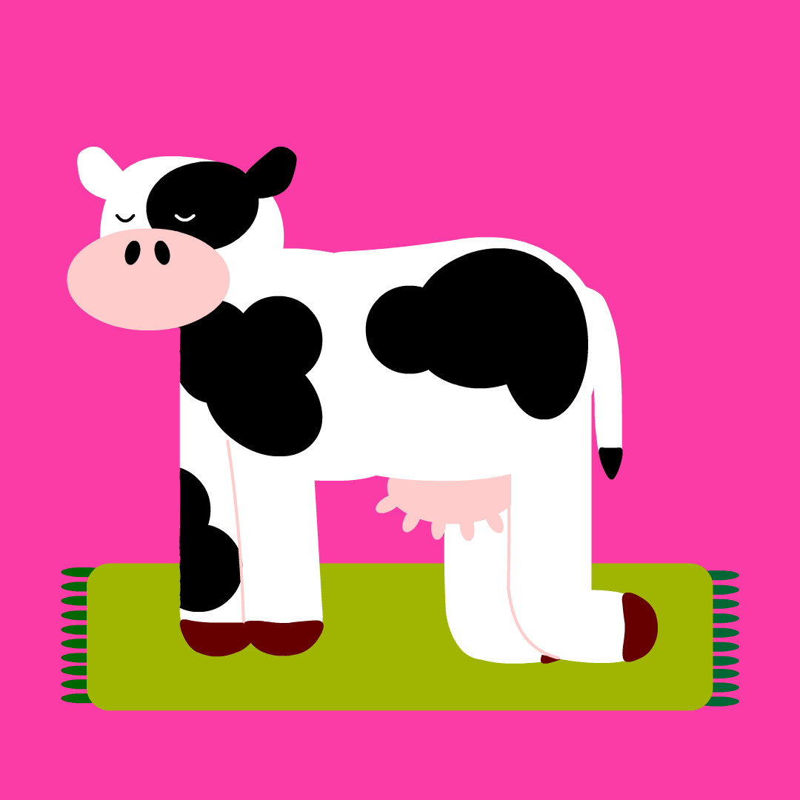

FlexibilidadSaludo al Sol
Ayuda a mejorar la concentración y fortalece piernas mientras te sientes alto y fuerte.
Descubre posturas divertidas para desarrollar equilibrio, concentración, fuerza y bienestar.

No se encontraron posturas

FlexibilidadAyuda a mejorar la concentración y fortalece piernas mientras te sientes alto y fuerte.

FlexibilidadFortalece brazos y piernas mientras desarrollas confianza y energía positiva.

FuerzaRelaja cuerpo y mente con movimientos suaves y respiración consciente.

CalmaEstira suavemente tu espalda y mejora la movilidad de toda la columna.

FuerzaFortalece todo tu cuerpo y mejora tu coordinación mientras juegas.

FlexibilidadAbre tus caderas y siente la ligereza de una mariposa en movimiento.
 Calma
Calma
Abre tus caderas y siente la ligereza de una mariposa en movimiento.
 Equilibrio
Equilibrio
Abre tus caderas y siente la ligereza de una mariposa en movimiento.

FuerzaAbre tus caderas y siente la ligereza de una mariposa en movimiento.

CalmaAbre tus caderas y siente la ligereza de una mariposa en movimiento.

FlexibilidadAbre tus caderas y siente la ligereza de una mariposa en movimiento.
 Fuerza
Fuerza
Abre tus caderas y siente la ligereza de una mariposa en movimiento.